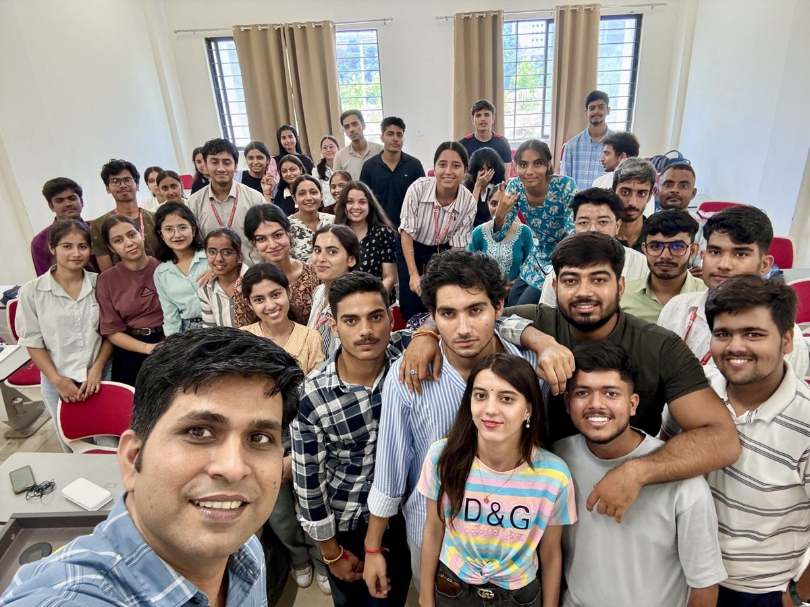
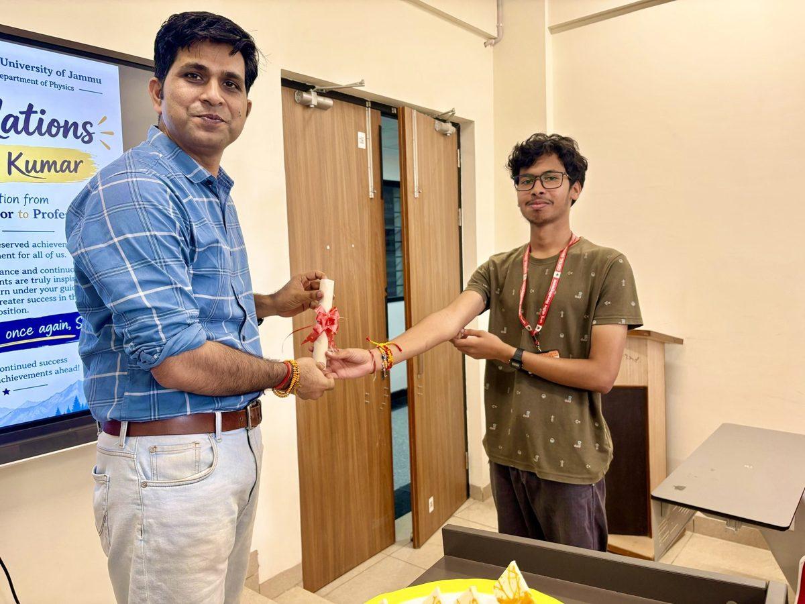
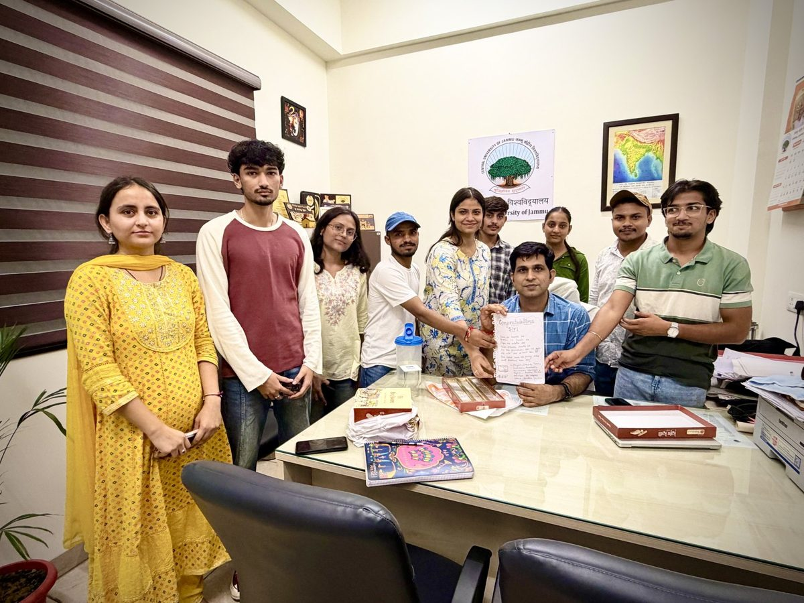
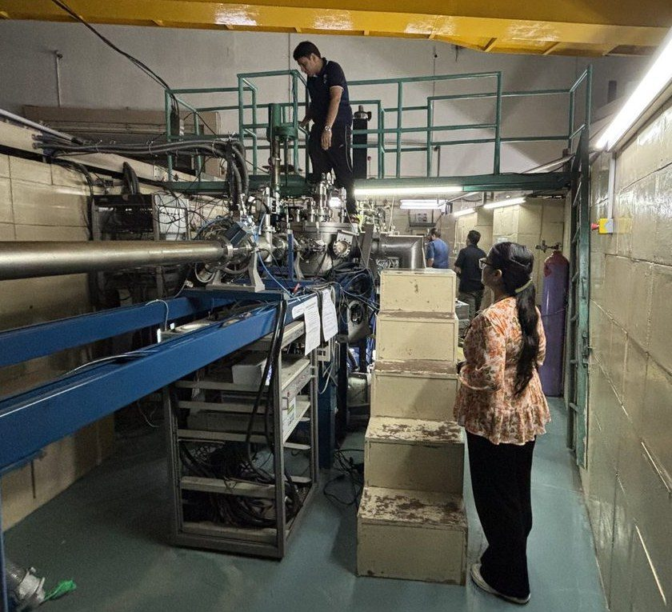
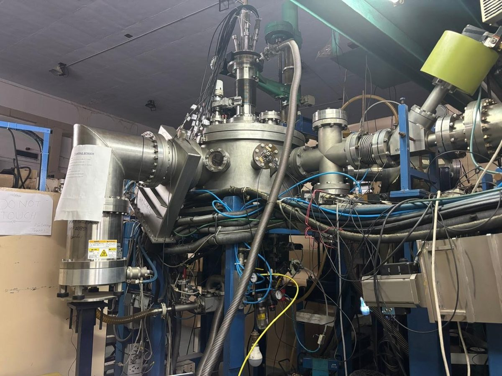
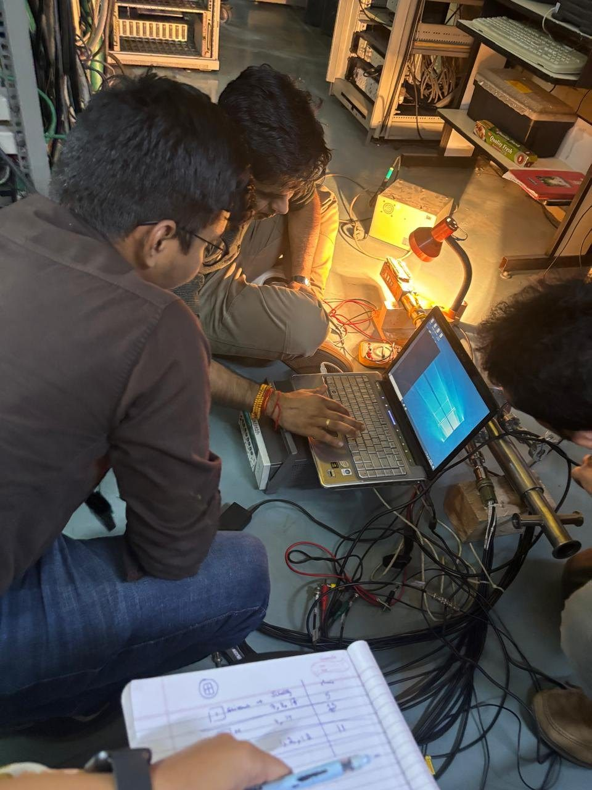
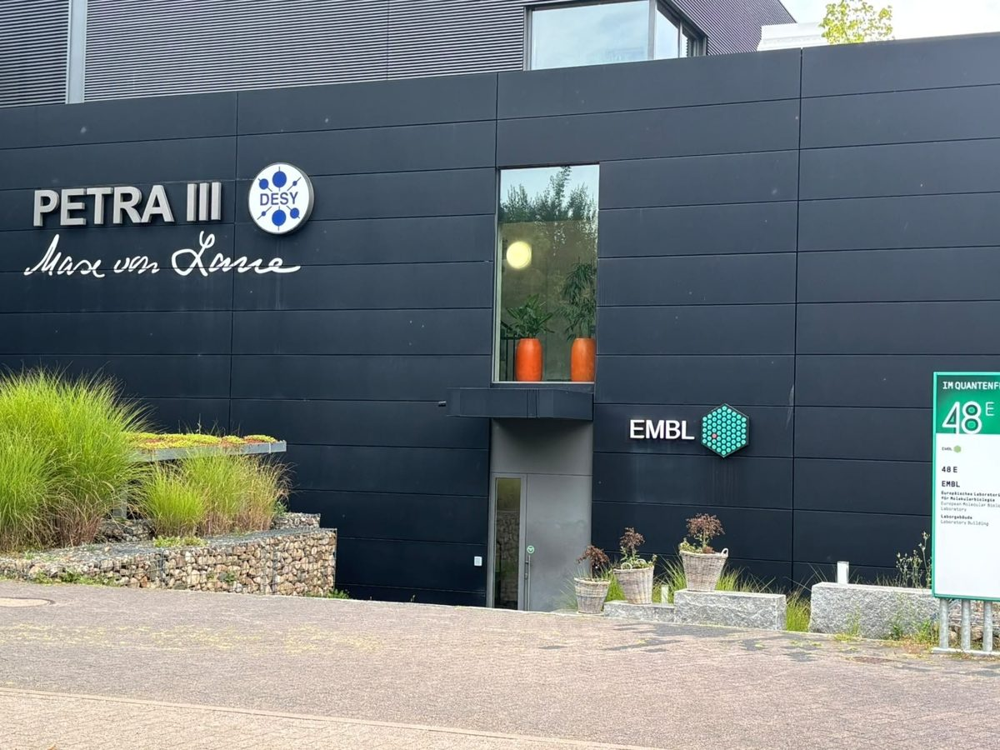
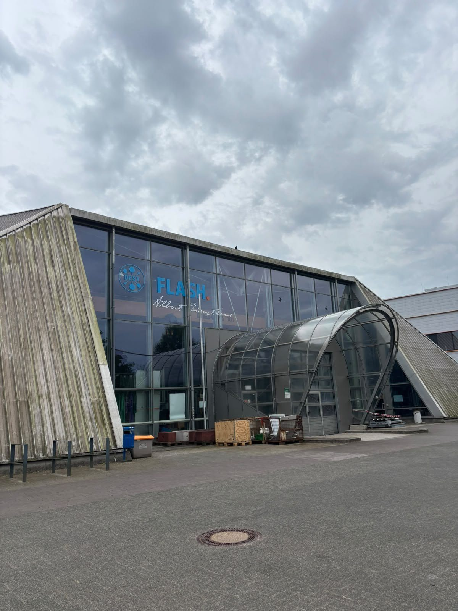
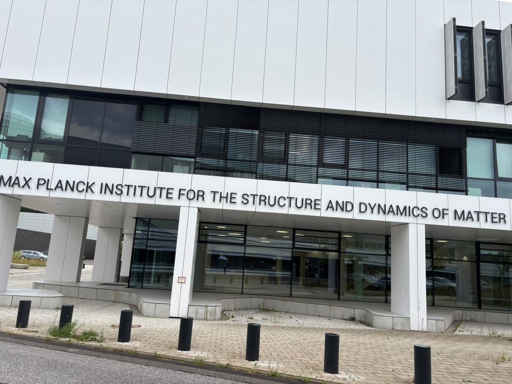

News & Gallery
Awards, publications, talks, student achievements and milestones — with the photographic record underneath.
Department Marks the Promotion to Professor
Students and colleagues in the Department of Physics & Astronomical Sciences marked the promotion on Monday 14 September 2026. The group’s doctoral and master’s students organised the gathering.



Beam-Time Experiment at IUAC, New Delhi
The group ran a beam-time experiment on the Pelletron at the Inter-University Accelerator Centre, New Delhi, from 2 to 7 September 2026 — six days of round-the-clock operation on the beamline, with in-situ electrical measurement during irradiation. Doctoral students ran the acquisition shifts.



Muskan Verma at PETRA III, DESY Hamburg — EXAFS on GaN and SiC
Muskan Verma spent 7–15 August 2026 at the PETRA III storage ring at DESY, Hamburg, recording extended X-ray absorption fine structure (EXAFS) on gallium nitride and silicon carbide. EXAFS reads the local coordination around an absorbing atom, so it reaches the short-range disorder that diffraction averages away — the question being what swift heavy ions leave behind in the first coordination shells. Her first beam time abroad.



Promoted to Professor, Central University of Jammu
Prof. Ashish K Sharma was promoted to Professor in the Department of Physics & Astronomical Sciences, Central University of Jammu, with effect from July 2026. The promotion follows three years at the university as Associate Professor, over which the group commissioned its in-situ DLTS facility and ran concurrent ISRO RESPOND, DRDO CARS, and IUAC projects.
Resource Person — Refresher Course in Physics, CUH Mahendergarh
Invited as Resource Person at the Refresher Course in Physics organised by Central University of Haryana (CUH), Mahendergarh (February 2026). Lecture delivered on "Probing Defects in Semiconductors: Deep Level Transient Spectroscopy Technique." Part of UGC-HRDC continuing education programme for college and university teachers.
Third PhD Degree Awarded — Dr. Kamal Singh
Dr. Kamal Singh was awarded his PhD in April 2026 for the thesis "Probing the Defect Landscape of GaN Epitaxial Layers and Devices under Swift Heavy Ion Irradiation: Implications for Material Quality and Device Reliability" (UPES Dehradun), bringing to three the number of doctoral degrees completed under Dr. Kumar's supervision.
Best PhD Thesis Award — Dr. Vaishali Rathi
Doctoral student Dr. Vaishali Rathi's thesis, "Fabrication of Printable Flexible Thermoelectric Material and Devices", was awarded the Best PhD Thesis at the UPES Dehradun Convocation 2025. The work, conducted under Prof. Ashish K Sharma's supervision, demonstrated a high-performance printable flexible thermoelectric composite combining PEDOT:PSS, Bi₂Te₃, and rGO — directly advancing the SERB-funded thermoelectric programme. Dr. Rathi is currently Senior Scientist at TACC Limited, Dewas, Madhya Pradesh.
Best Poster Award — Ms. Muskan Verma at DAE-SSPS 2025
PhD student Ms. Muskan Verma was awarded the Best Poster Award at the DAE Solid State Physics Symposium (DAE-SSPS 2025) — one of the most prestigious annual physics symposia in India, organised by the Department of Atomic Energy. A proud milestone for the group at Central University of Jammu.
Second PhD Degree Awarded — Dr. Vaishali Rathi
Dr. Vaishali Rathi completed her PhD at UPES Dehradun in November 2025 with a thesis on printable flexible thermoelectric materials and devices, bringing to two the number of doctoral degrees awarded under Dr. Kumar's supervision.
Electrical Characterisation Techniques for Semiconductors — CUH, July 2025
Invited as Resource Person for a lecture on "Electrical Characterisation Techniques for Semiconductors" at Central University of Haryana (CUH), Mahendergarh (July 07, 2025).
New Papers: NiO-GO Composites, TiO₂ Films & Bi₂Te₃ (2025)
Three new peer-reviewed papers published in 2025: (1) "Enhanced Optical and Electrical Properties of NiO-GO Composite Films on PET" in Chemistry of Inorganic Materials; (2) "UV Protection and Photocatalytic Activity in Sm/Eu Co-Doped TiO₂ Thin Films" in Materials Science & Engineering B; (3) "Enhancement in Power Factor of Sn/Zn Co-Doped Bismuth Telluride" in Journal of Materials Science: Materials in Electronics.
RSC Advances Outstanding Student Paper Award — Flexible Thermoelectric Composites
The paper "Improved Thermoelectric Performance of PEDOT:PSS/Bi₂Te₃/rGO Ternary Composite Films for Energy Harvesting" (RSC Advances, 2024) was selected for the RSC Advances Outstanding Student Paper Award by the Royal Society of Chemistry — competitive international recognition for the group's flexible thermoelectric research.
RSC Blog — Award AnnouncementSecretary — International Conference on Physics for Sustainable Development (ICPSD 2024)
Prof. Ashish K Sharma served as Secretary of the International Conference on Physics for Sustainable Development (ICPSD 2024), hosted at Central University of Jammu. The conference brought together researchers from across India and internationally to discuss physics-driven approaches to sustainable development challenges.
Invited Lecture — Faculty Development Programme, Patna University
Delivered an invited lecture on "Electrical Transport Properties Measurement in Materials" at the Faculty Development Programme on Advances in Experimental & Theoretical Research in Physical Sciences, Dept. of Physics, Patna University (March 4–16, 2024).
Four New Papers in 2024: GaN Defects, Bi₂Te₃, Reviews & Phosphors
Four new papers published in 2024 in journals including RSC Advances, Organic Electronics, Nuclear Instruments and Methods B (two papers), and Ceramics International. Topics span flexible thermoelectrics, ion-induced defect transformation in GaN, and luminescence of nanophosphors.
Invited Lecture at MESD 2023, JNU New Delhi
Delivered an invited lecture on "Wide-Bandgap Materials as Thermoelectric Materials for High-Temperature Applications" at the International Conference on Materials for Energy & Sustainable Development (MESD 2023), JNU New Delhi (October 27–29, 2023).
Joins Central University of Jammu as Associate Professor
Prof. Ashish K Sharma joins the Department of Physics & Astronomical Sciences at Central University of Jammu as Associate Professor (August 2023). He arrives with active DRDO CARS, IUAC, and ISRO RESPOND projects, three PhD students, and a well-established publication record — immediately becoming one of the most externally-funded faculty in the department.
I-STEM Tech Management Conclave 2023, IISc Bangalore
Invited talk on "Wide-Bandgap Semiconductors as Thermoelectric Materials" at the I-STEM Tech Management Conclave 2023 held at IISc Bangalore (January 19–20, 2023).
Selected for 69th Lindau Nobel Laureate Meeting, Germany
Selected among approximately 600 outstanding young scientists globally to attend the 69th Lindau Nobel Laureate Meeting (Physics) in Lindau, Germany — a once-in-a-career honour. Approximately 15–20 Indian nominees are selected nationally across all disciplines each year. The meeting brings Nobel Prize winners and the next generation of leading scientists together for a week of dialogue and inspiration.
Seebeck Measurement System Published in Review of Scientific Instruments
The indigenous Seebeck coefficient and resistivity measurement system (80–650 K) designed from scratch was published in Review of Scientific Instruments (AIP, 2019) — one of very few such systems designed indigenously in India, and now used by multiple collaborating national groups.